上週六站長參加一場特別有意義的活動，由台灣美廟故事發起，苗栗頭份永貞宮主辦的「台灣美廟故事第一屆宮廟小編聯誼會」，這場活動聚集了台灣40間宮廟小編，還有資深宮廟紀錄者台灣多奇廟一起參加，這場活動策畫了一年，終於上週六如期舉辦，與會的每間宮廟小編都是深藏不露的民間高手，有的人是地區發展協會理事長，有的人是資深設計師、知名企業中高級工程師、大學助理教授、樂團歌手，每一位都是熱衷於發揚台灣傳統宗教文化的推手，這場活動不僅讓小編們從網友變成真實的朋友，更提供了一個宮廟間互相交流平台，一起讓台灣傳統宗教文化得以更廣泛的傳播。
主辦方苗栗頭份永貞宮不僅提供場地與人力，主委 張淑芬女士除了介紹永貞宮的故事更準備知名的頭份尖山米粉給大家，現場的各宮廟小編也都準備精緻結緣品給與會的來賓，讓這場盛會充滿著濃濃文創風，透過結緣品的方式去展現每間宮廟文化與特色，除此之外身為發起人的台灣美廟故事主編陳建學先生，分享了紀錄台灣廟宇13年的心路歷程，台灣美廟故事粉絲團成立六年，至今已經累積了8萬多追蹤者，長久以來都希望有個聚會交流的機會與場地，這次活動能夠圓滿舉行除了感謝頭份永貞宮大力協助，也辛苦台灣美廟故事的堅持與用心。
這次活動台灣美廟故事也讓站長有機會分享拜好廟求好運給在場的宮廟朋友，2021年7月拜好廟求好運網站開始正式營運，從一開始沒有任何資源，到現在已經累積了4,000多間台灣宮廟資訊，上個月拜好廟求好運網站的造訪人數也突破了4萬人，拜好廟求好運粉絲團追蹤人數也正式到達9,500人了，站長十分感謝一路走來支持我們的宮廟朋友與非宮廟組織的協力朋友，因為大家才讓這個網站有存在的意義，現場站長也分享一些品牌電商經營的策略，如何運用到宗教文化的推廣，運用新科技的力量，讓傳統宗教文化推廣到更多地方，譬如Q版造型的神明公仔運用，如何運用成本低的數位廣告去推廣宮廟，現場每位小編用心記錄，站長非常感謝，努力一個禮拜簡報整理終於沒有白費了。
最後感謝以下單位及宮廟朋友，因為有你們，站長在推廣台灣傳統宗教文化這條路，永遠不孤單。
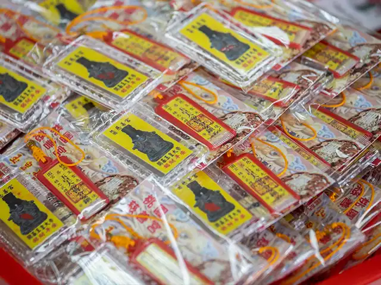
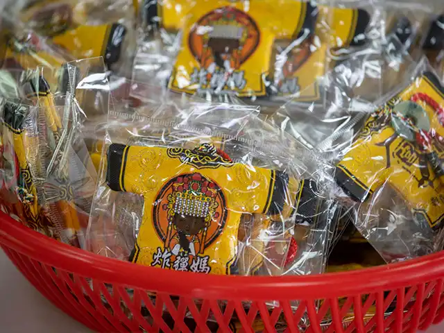
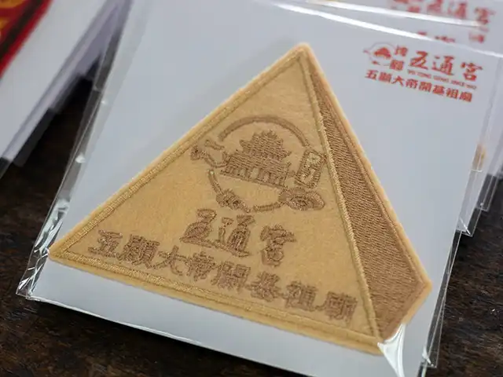
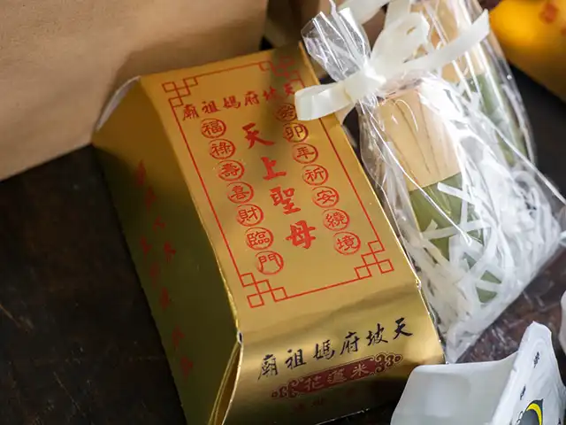
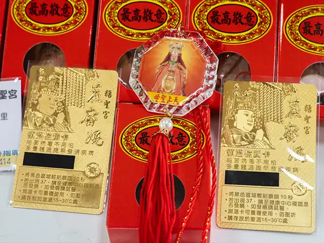
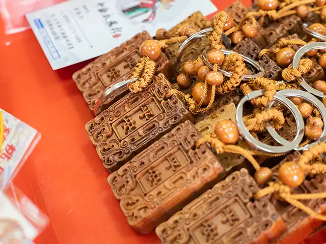
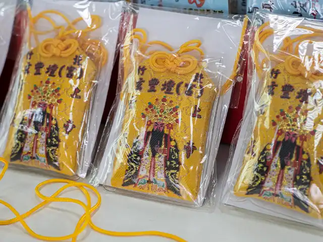
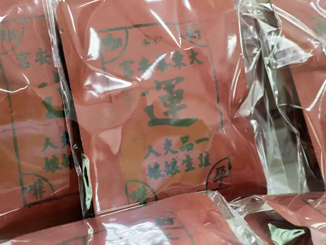
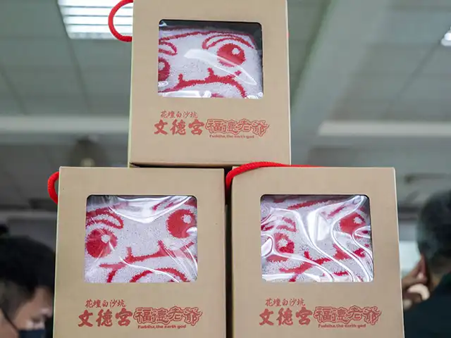
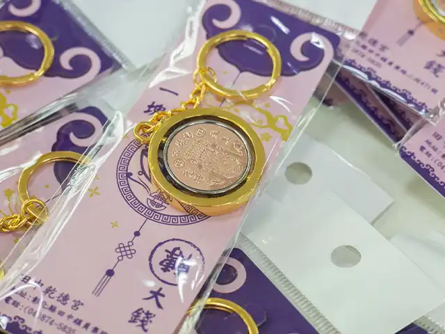
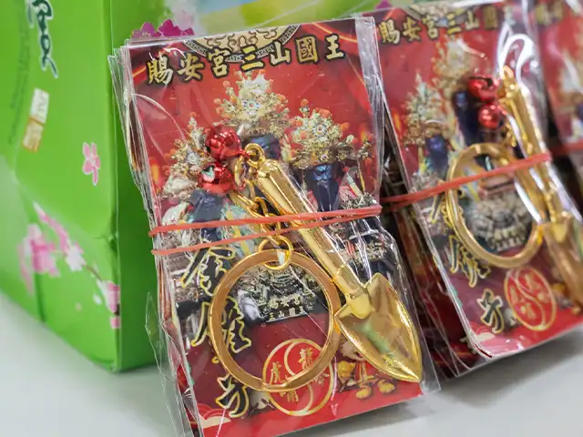